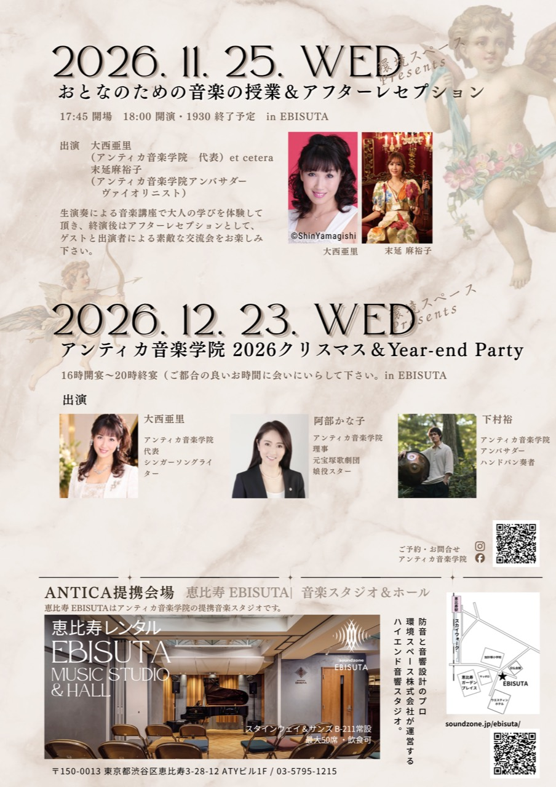
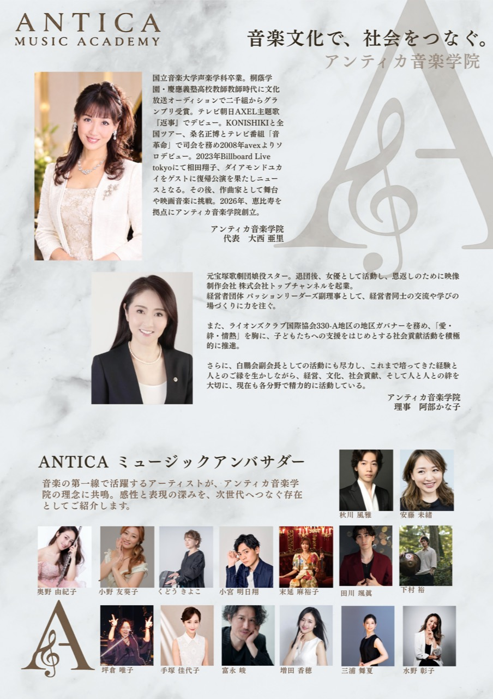

アンティカ音楽学院
2026クリスマス＆Year-end Party
2026年12月23日、恵比寿エビスタにて開催。音楽と交流を楽しみながら、2026年を締めくくる特別なパーティーです。


音楽とともに、出演者や参加者の交流を楽しみながら、アンティカ音楽学院の2026年を締めくくるクリスマス＆Year-end Partyです。
出演
- 出演大西 亜里（アンティカ音楽学院 代表／シンガーソングライター）
- 出演阿部 かな子（アンティカ音楽学院 理事／元宝塚歌劇団娘役スター）
- Handpan下村 裕（アンティカ音楽学院アンバサダー）
公演紹介
アンティカ音楽学院が2026年の締めくくりに開催する、クリスマス＆Year-end Partyです。
音楽とともに、出演者や参加者との交流を楽しむひとときをお届けします。16時から20時まで、ご都合のよい時間にお越しください。
開催概要
- 日程2026年12月23日（水）
- 時間16:00開宴 / 20:00終宴
- ご来場ご都合のよい時間にお越しください
- 会場恵比寿エビスタ
- 住所〒150-0013 東京都渋谷区恵比寿3丁目28-12 ATYビル1F
ご予約・お問い合わせ
アンティカ音楽学院のメール、または公式Instagramよりご予約ください。
- お名前
- 電話番号
- メールアドレス
- ご希望の公演名
- 人数
出演者プロフィール
大西 亜里 representative / singer-songwriter
国立音楽大学声楽学科卒業。音楽教師を経て“アンティカ”としてメジャーデビューし、2008年avexよりシンガーソングライターとしてソロデビュー。作曲、音楽プロデュースへ活動を広げ、2026年アンティカ音楽学院を創立し代表に就任。
阿部かな子 board member
元宝塚歌劇団娘役スター。退団後は女優として活動し、映像制作会社 株式会社トップチャンネルを起業。経営、文化、社会貢献、人と人との絆を大切に、各分野で活動している。アンティカ音楽学院 理事。
下村 裕 handpan
THREE1989のメンバーとしてキーボードと編曲を担当。ピアノ、ギター、ドラムも演奏するマルチプレイヤー。2022年よりハンドパンを始め、「温もりのある安らかな音楽」をテーマに活動している。